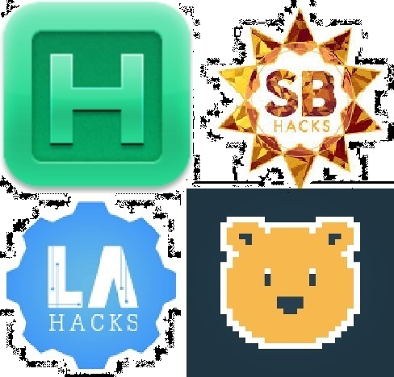
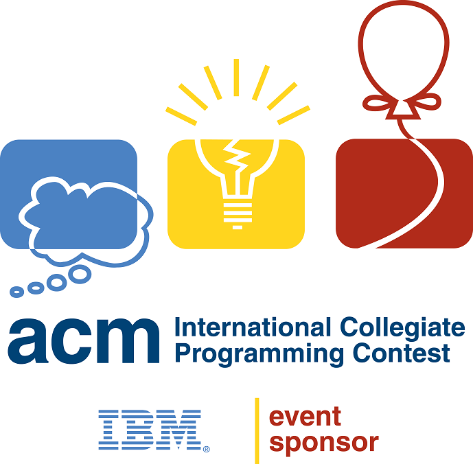
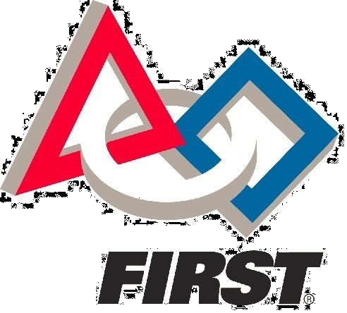

I'm a Computer Science and Engineering major with a Math minor at University of California - Los Angeles. Check out my resume/CV, or the projects I've worked on. If you'd like to discuss my coursework, side projects, or prior job experience, please contact me. I can be reached by phone at 1-650-270-1955, or through email at aduriseti@gmail.com.
Projects resume/CV
Through a branch of my school's ACM chapter, I participate in several California hackathons, including Calhacks, Microsoft OpenHacks, and LaHacks. While I find the time sensitive and competitive atmosphere at hackathons to be very enjoyable, making new friends and working with old ones is my favorite part of the experience. A couple of our projects from past hackathons have (incomplete) snippets of code featured on my Github

As part of my involvement with my school's ACM chapter, I am a member of our ICPC team. This involves weekly meetings where we hone our algorithmic thinking skills and an intensive training session with mentors from ITMO in the fall. This year, our team placed second in the Southern California regional and will be travelling to Morocco to compete in the international stage of the competition.

Despite my computer science inclinations, I love technology in all its forms. I've been involved in robotics for close to 7 years, and have learned skills atypical of a Computer Science major, such as machining by hand, designing pieces with CAD, and generating CNC compatible build paths in G-code. I've also gained experience more typical of an EE major, like deploying code to hardware and using Arduino boards to gather data and control real world objects.